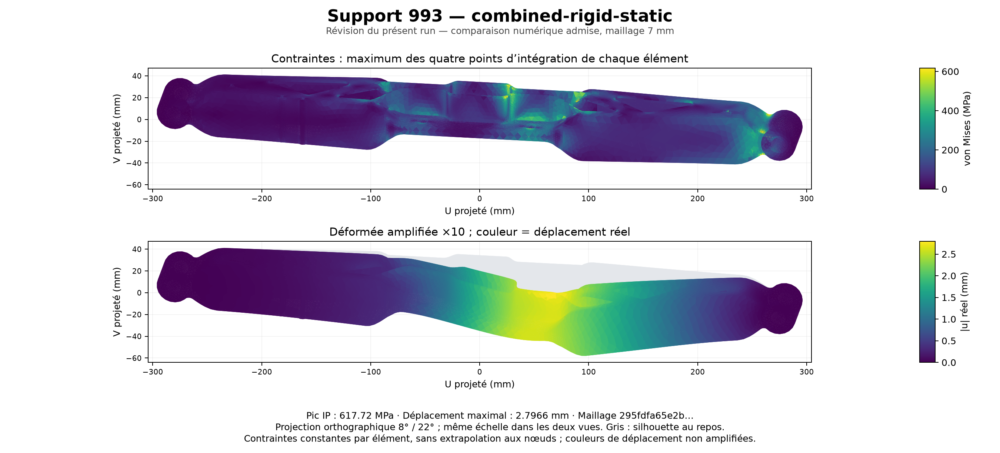

← La pièce, les dimensions et les couches
Où la pièce travaille
Résultats conservés du calcul combiné sur le modèle retenu de 1,262 kg. Cas d’étude : effort vertical de −4 000 N et moment de 850 N·m, avec les fixations d’extrémité bloquées. Maillage de calcul de 7 mm.

En haut, les contraintes de von Mises : maximum de 617,72 MPa aux points d’intégration. En bas, les déplacements : maximum de 2,7966 mm. La silhouette grise indique la forme au repos ; seule la déformée est amplifiée ×10, les valeurs de couleur restent réelles.
Cette figure décrit ce cas de comparaison avec appuis rigides. Les autres appuis et chargements du dossier donnent leurs propres résultats ; cette carte seule ne constitue pas un verdict de résistance ou de fatigue.
Figure vectorielle · Données de la figure · Sources vérifiées et commande de reproduction